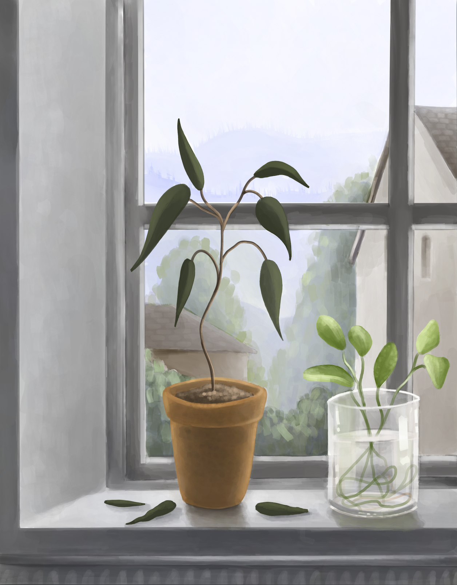

Life and Death

Project Description:
This piece was an assignment created for a color theory course at Las Positas Community College. Produced digitally on ProCreate, I wanted to experiment with the concept of mortality, and depict life and death through plant cycles. On the left, we see a shriveled, darker-colored plant appearing to be on the brink of dying, contrasted to the brighter-colored plant on the right, which is at the beginning of its life cycle, still growing in its glass enclosure. While these two plants are meant to show the contrast between life and death next to one another, they are also meant to suggest how one state of life can contribute to the other, and how they can go hand in hand. For the background, I wanted to create a somber but peaceful scene to tie into my concept, filled with muted, cool-toned colors, and foggy skies. This also suggests the beautiness and serenity that life can be, even in death. By choosing to focus on plants in order to convey the concept of mortality, I aimed to highlight the quiet durability and inescapable transformation of nature, and how it connects us as humans to all living things.